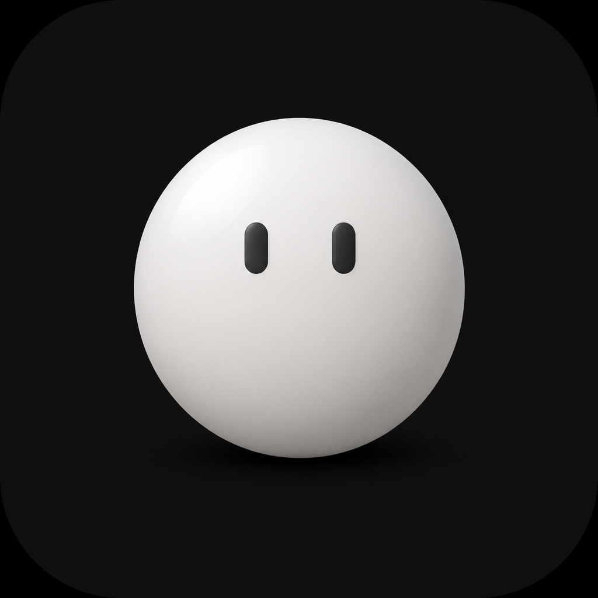
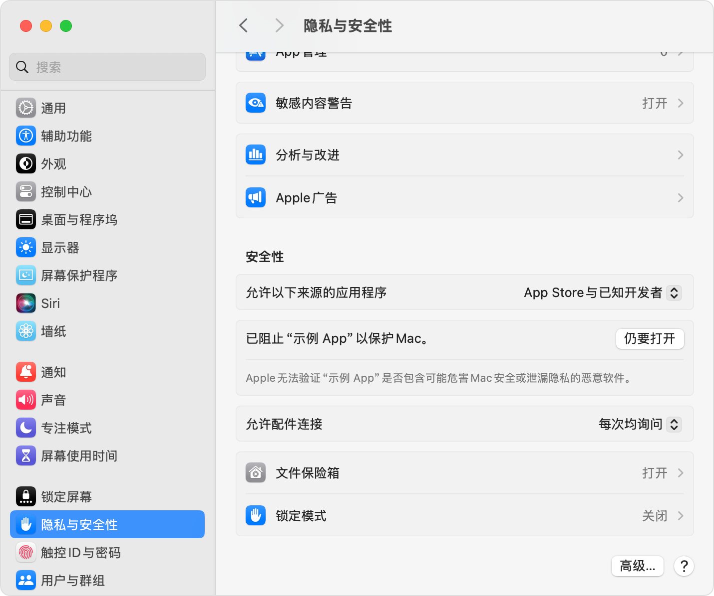

拖动与互动
拖放后转身站稳，朝向桌面内侧；唤醒时绕个小圈。
嗨，今天也碰面啦。
它不会占据你的工作，只在你愿意时回应。
拖放后转身站稳，朝向桌面内侧；唤醒时绕个小圈。
目光跟随同屏鼠标，摸摸头就会侧躺回应。
双击触发弹跳、抖动、探望等小动作。
从 60 × 60 到 260 × 260，六档可选，支持始终置顶。
站稳啦，继续陪你。
靠边时显示额度提示；移到球球上可展开，再次勾选可体验另一周期。
灵感放在桌面，计划交给提醒。想起来时，随手记一笔。
便签与待办保存在本机。提醒需球球保持运行；智能整理需登录 Codex 并联网。
工作交给 Codex，进展让球球轻轻提醒你。
默认关闭，可选开启只查看状态，不代你操作。
了解隐私边界我陪你等结果。
Codex 处理中
头顶光迹陪你等待，球球替你留意进展。
想说点什么，就打开球球旁边的聊天面板。
需登录 Codex 并联网，使用你的 Codex 额度。普通桌宠仍可离线使用。
Apple 芯片版已支持聊天
模型与使用说明
模型可以自动选择，也能在输入框左下角手选，以本机账号可用列表为准。无需另填 API Key；模型不可用时会明确提示。球球只执行预设动作，不运行模型返回的代码或命令。
薄荷绿、晴空蓝，换一种心情。浅色、深色与跟随系统，独立切换。色弱友好模式采用专用高对比配色。
右键球球或菜单栏 → 界面配色 → 主题色。
按你的 Mac 芯片选择对应版本。
推荐，已验证
适用于 M1、M2、M3、M4 及后续 Apple 芯片 Mac。需要 macOS 12.0 或更高版本。
最新 Intel 版本
Intel 版停留在 0.3.13，提供基础桌宠互动，不包含本页展示的新版聊天、便签待办、定制与额度卡片 2.0。
已通过独立 x64 构建、签名与 Rosetta 检查，尚未在真实 Intel Mac 上验收；Codex 联动也未通过 Intel 实机验证。
当前安装包使用临时签名，未经过 Apple 公证。请确认下载来自本官网。


随手记便签、安排待办，Codex 进展也有球球替你留意。
macOS 版下载